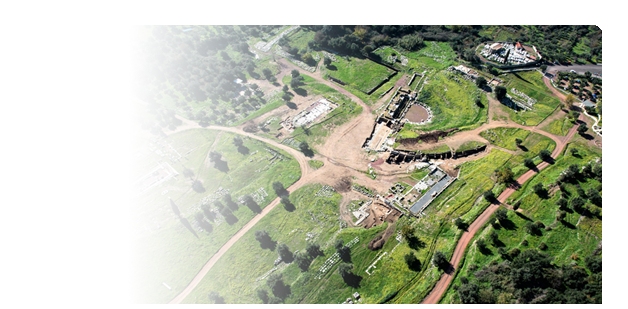
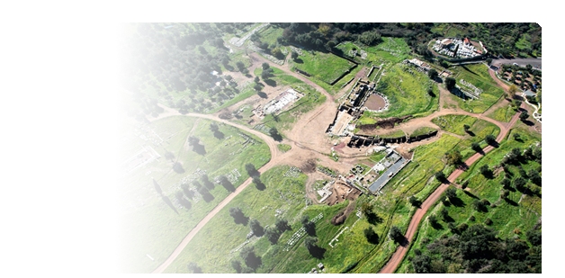

Το συγκρότημα του Ασκληπιείου
 Ο Παυσανίας παρουσιάζει το Ασκληπιείο ως μουσείο έργων τέχνης, κυρίως αγαλμάτων και όχι ως συνηθισμένο τέμενος θεραπείας ασθενών. Ήταν ο επιφανέστερος χώρος της Μεσσήνης, κέντρο της δημόσιας ζωής της πόλης, που λειτουργούσε παράλληλα με την παρακείμενη αγορά. Περισσότερα από 140 βάθρα για χάλκινους ανδριάντες πολιτικών κυρίως προσώπων και πέντε εξέδρες περιβάλλουν το δωρικό ναό και το βωμό, ενώ πολλά είναι τοποθετημένα και κατά μήκος των στοών. Ένας σχεδόν τετράγωνος υπαίθριος χώρος (71,91X66,67μ.) πλαισιώνεται εσωτερικά από τέσσερις στοές, ανοιχτές προς τον κεντρικό υπαίθριο χώρο. Κάθε στοά της βόρειας και νότιας πλευράς είχε στην πρόσοψη 23 κίονες κορινθιακούς που στήριζαν θριγκό, αποτελούμενο από ιωνικό επιστύλιο και από ζωφόρο με ανάγλυφα βουκράνια στολισμένα εναλλάξ με ανθοπλοκάμους και ρόδακες. Όμοιες ήταν και οι στοές της ανατολικής και δυτικής πλευράς, αλλά με 21 κίονες η καθεμία. Σε κάθε στοά υπήρχε δεύτερη εσωτερική κιονοστοιχία με 14 κίονες στην βόρεια και τη νότια πλευρές και 13 στην ανατολική και δυτική. Ο Παυσανίας παρουσιάζει το Ασκληπιείο ως μουσείο έργων τέχνης, κυρίως αγαλμάτων και όχι ως συνηθισμένο τέμενος θεραπείας ασθενών. Ήταν ο επιφανέστερος χώρος της Μεσσήνης, κέντρο της δημόσιας ζωής της πόλης, που λειτουργούσε παράλληλα με την παρακείμενη αγορά. Περισσότερα από 140 βάθρα για χάλκινους ανδριάντες πολιτικών κυρίως προσώπων και πέντε εξέδρες περιβάλλουν το δωρικό ναό και το βωμό, ενώ πολλά είναι τοποθετημένα και κατά μήκος των στοών. Ένας σχεδόν τετράγωνος υπαίθριος χώρος (71,91X66,67μ.) πλαισιώνεται εσωτερικά από τέσσερις στοές, ανοιχτές προς τον κεντρικό υπαίθριο χώρο. Κάθε στοά της βόρειας και νότιας πλευράς είχε στην πρόσοψη 23 κίονες κορινθιακούς που στήριζαν θριγκό, αποτελούμενο από ιωνικό επιστύλιο και από ζωφόρο με ανάγλυφα βουκράνια στολισμένα εναλλάξ με ανθοπλοκάμους και ρόδακες. Όμοιες ήταν και οι στοές της ανατολικής και δυτικής πλευράς, αλλά με 21 κίονες η καθεμία. Σε κάθε στοά υπήρχε δεύτερη εσωτερική κιονοστοιχία με 14 κίονες στην βόρεια και τη νότια πλευρές και 13 στην ανατολική και δυτική.
Στην ανατολική πτέρυγα της περίστυλης αυλής βρίσκεται συγκρότημα τριών οικοδομημάτων: το μικρό στεγασμένο θεατροειδές Εκκλησιαστήριο, το Πρόπυλο, το Συνέδριον ή Βουλευτήριο και η αίθουσα Αρχείου του Γραμματέως των Συνέδρων. Κατά μήκος της δυτικής πτέρυγας βρίσκεται σειρά δωματίων-Οίκων που σύμφωνα με την περιγραφή του Παυσανία περιείχαν αγάλματα των εξής θεοτήτων κατά σειρά από Νότο προς Βορρά: Απόλλωνος και Μουσών , Ηρακλή-Θήβας-Επαμεινώνδα (Οίκος Ν), Τύχης (Οίκος Μ), Αρτέμιδος Φωσφόρου (Οίκος Κ).

Τη βόρεια πτέρυγα του Ασκληπιείου κλείνει μεγάλο διμερές οικοδόμημα κτισμένο πάνω σε υψηλό πόδιο, προσιτό από κεντρικό μνημειώδες κλιμακοστάσιο που στο βόρειο πέρας του καταλήγει σε πρόπυλο με αετωματική επίστεψη. Οι δύο αίθουσες του οικοδομήματος, δεξιά και αριστερά από το βόρειο κλιμακοστάσιο, που διαιρούνται πανομοιότυπα σε πέντε δωμάτια, έχουν ταυτισθεί με το Σεβάστειον ή Καισαρείον των επιγραφών. Ήταν αφιερωμένες στη λατρεία της θεάς Ρώμης και των αυτοκρατόρων. Στο ανατολικό άκρο της βόρειας πτέρυγας, στο επίπεδο της στοάς, βρίσκεται ο επιμελούς κατασκευής Οίκος Η με βάθρο αγαλμάτων. Η ανέγερση του συγκροτήματος του Ασκληπιείου, που πρέπει να συντελέστηκε αμέσως μετά τα γεγονότα του 215/14 π.X., φαίνεται ότι εντάσσεται σε ένα μεγαλόπνοο οικοδομικό πρόγραμμα, κατά το πρότυπο της αθηναϊκής Ακροπόλεως, με στόχο την προβολή των Μεσσηνίων ως ιδιαίτερου έθνους στην Πελοπόννησο και με βαθιές ρίζες στο προδωρικό και το δωρικό παρελθόν της χώρας. Όλα σχεδόν τα γλυπτά του οικοδομικού συγκροτήματος του Ασκληπιείου ήταν έργα του γλύπτη Δαμοφώντα, με εξαίρεση το χρυσόλιθο άγαλμα της Μεσσήνης και το σιδερένιο του Επαμεινώνδα (Παυσ. 4.31.10).

Το μεγαλύτερο μέρος του κεντρικού υπαίθριου χώρου του Ασκληπιείου καταλαμβάνεται από τον επιβλητικό δωρικό περίπτερο ναό και το μεγάλο βωμό του. Ο ναός ήταν περίπτερος δωρικός (6X12 κίονες) με πρόναο και οπισθόδομο, που ο καθένας τους έφερε δύο κίονες μεταξύ παραστάδων. Οι εξωτερικές διαστάσεις του μνημείου είναι 13,67X27,94 μ., ενώ το συνολικό του ύψος ήταν 9 μ. περίπου. Εδράζεται σε τρίβαθμη κρηπίδα. Στην ανατολική του πλευρά, όπου η είσοδος, υπάρχει ράμπα. Ο σηκός, ο πρόναος και ο οπισθόδομος είναι κτισμένοι από τοπικό ασβεστόλιθο, ενώ το πτερό από επιχρισμένο ψαμμιτικό λίθο. Το άδυτο χωριζόταν από το υπόλοιπο τμήμα του ναού με θωράκιο και στο βάθος του υπήρχε γλυπτική λατρευτική σύνθεση,. Αφιερώματα που προσιδιάζουν στη λατρεία του θεραπευτή θεού Ασκληπιού δεν βρέθηκαν. Επιβεβαιώνεται η άποψη ότι ο Ασκληπιός της Μεσσήνης δεν είχε προέχουσα τη θεραπευτική ιδιότητα, αλλά την πολιτική, εκείνη του "Μεσσήνιου πολίτη" (Παυσ. 4.26.7). Είχε τη θέση του μέσα στο γενεαλογικό δέντρο των μυθικών βασιλέων της Μεσσηνίας, τόσο των πριν όσο και των μετά την κάθοδο των Ηρακλειδών στην Πελοπόννησο. Μητέρα του ήταν η Αρσινόη, κόρη του Λευκίππου, που έδωσε το όνομα της και στην Κρήνη Αρσινόη της αγοράς.

To ΕΚΚΛΗΣΙΑΣΤΗΡΙΟ είναι μικρή θεατρική κατασκευή με κοίλο εγγεγραμμένο σε ορθογώνιο κέλυφος και κυκλική ορχήστρα, διαμέτρου 9,70 μ. σκηνή, πλάτους 21 μ. Είχε προσκήνιο με τρία ανοίγματα μπροστά και κλιμακοστάσιο εξόδου στο ανατολικό άκρο του. Το κοίλο, σχήματος μεγαλύτερου του ημικυκλίου χωρίζεται με διάζωμα σε άνω και κάτω. Το κάτω κοίλο απαρτίζεται από έντεκα σειρές λίθινων εδωλίων και χωρίζεται σε τρεις κερκίδες με δυο κλιμακοστάσια. Δυο ακόμη κλίμακες ανόδου υπάρχουν στα άκρα του κοίλου κοντά στις παρόδους. Δύο είσοδοι από την πλευρά της ανηφορικής οδού στα ανατολικά οδηγούν η μία στην ορχήστρα με κλιμακοστάσιο καθόδου και η άλλη απευθείας στο διάζωμα μεταξύ κάτω και άνω κοίλου. Το κοίλο περιβάλλεται από ισχυρό αναλημματικό τοίχο, ο οποίος κατά την ανατολική και βόρεια πλευρά είναι κτισμένος στο κάτω μέρος του με λείους ορθοστάτες, ενώ στο άνω με το ψευδοϊσόδομο κυφωτό σύστημα, που απαντά και στην Πριήνη της Μικράς Ασίας. Σκεπαστό κλιμακοστάσιο στη ΒΔ γωνία του αναλήμματος οδηγούσε στο ανώτατο διάζωμα του κοίλου από τη βόρεια πλευρά. Στο ανατολικό άκρο της ορχήστρας, μπροστά στο κλιμακοστάσιο που οδηγεί στην ανατολική είσοδο του οικοδομήματος, τοποθετήθηκε τον 2ο αιώνα μ.X. μεγάλο βάθρο έφιππου ανδριάντα από χαλκό προς τιμήν του Ελλαδάρχη Σαιθίδα.
Το ΠΡΟΠΥΛΟ οδηγεί από την ανηφορική ανατολική οδό στο χαμηλότερα εκτεινόμενο Ασκληπιείο. Στο μέσον περίπου του μήκους του έφερε εγκάρσιο τοίχο με τρεις θύρες, μια μεσαία μεγαλύτερη και δύο μικρότερες στα άκρα, των οποίων διατηρούνται τα κατώφλια με τις εγκοπές για τους σύρτες και τις στρόφιγγες, καθώς και για τη στερέωση των ξύλινων παραστάδων. Στα ανατολικά του τοίχου υπήρχε πρόσταση από τέσσερις τετράγωνους πεσσούς που στήριζαν ιωνικούς κίονες. Μεταξύ της εξωτερικής πεσσοστοιχίας και του εγκάρσιου τοίχου με το τρίθυρο διασώθηκε το δάπεδο, αποτελούμενο από μεγάλες τετράγωνες λίθινες. Η πρόσταση, που έβλεπε προς το Ασκληπιείο έφερε δύο κίονες κορινθιακού ρυθμού. Στην ύστερη αρχαιότητα (3ος/4ος αι. μ.X.) η δυτική αυτή πρόσταση είχε επισκευασθεί πρόχειρα. Οι δύο ανόμοιες βάσεις κορινθιακών κιόνων που διατηρούνται στη θέση τους προέρχονται από την μεταγενέστερη αυτή επισκευή.
Το ΒΟΥΛΕΥΤΗΡΙΟ αποτελεί τον κατ' εξοχήν χώρο συγκέντρωσης συνέδρων, αντιπροσώπων των πόλεων της αυτόνομης Μεσσηνίας. Έχει σχήμα σχεδόν τετράγωνο, διαστάσεων 20,80 X 21,60 μ., και στέγη τετράκλινη που στηριζόταν εσωτερικά σε τέσσερις πεσσούς. Οι τρεις πλευρές της (βόρεια, ανατολική και νότια) ήταν κλειστές, κτισμένες με τοίχο, πάχους 1,20 μ., ενώ είσοδος υπήρχε μόνο στη δυτική πλευρά από δύο μεγάλα τρίθυρα ανοίγματα .Κατά μήκος των τριών κλειστών πλευρών διατηρήθηκε λίθινο συνεχές έδρανο με συμφυές ερεισίνωτο και λαξευτά λεοντοπόδαρα στα δύο άκρα. Το συνολικό μήκος του εδράνου (56 μ.) επέτρεπε να κάθονται άνετα 76 σύνεδροι, όσα ήταν τα μέλη της ιερής γερουσίας.
Η ΑΙΘΟΥΣΑ ΤΟΥ ΑΡΧΕΙΟΥ, διαστάσεων 16,45X19,75 μ., είναι πλήρης κατασκευών της πρωτοβυζαντινής περιόδου. Δεδομένου του δημόσιου πολιτικού χαρακτήρα των χώρων της ανατολικής πτέρυγας του Ασκληπιείου και της γειτνίασης της αίθουσας αυτής προς το Βουλευτήριο της πόλης, είναι μάλλον βέβαιο ότι είχε ανάλογο δημόσιο χαρακτήρα. Σύμφωνα άλλωστε με μαρτυρία επιγραφής, που βρέθηκε μπροστά στην ανατολική είσοδο της αίθουσας, πρέπει να στεγαζόταν σε αυτήν το Αρχείο του Γραμματέως των Συνέδρων.

ΤΟ ΠΡΩΤΟ ΙΕΡΟ ΤΗΣ ΟΡΘΙΑΣ
Στα ΒΔ του Ασκληπιείου ήλθε στο φως πρόστυλος ναός, διαστάσεων 8,42x5,62 με σχεδόν τετράγωνο σηκό, αβαθή ευρύτερο πρόδομο και ράμπα στο μέσον της τετράστυλης πρόσοψης. Γύρω από την πρόσοψη του ναού αποκαλύφθηκαν βάθρα αναθημάτων και ενεπίγραφες στήλες. Κατά μήκος της βόρειας πλευράς, βρέθηκαν δύο θησαυροί νομισμάτων, χαλκών της Μεσσήνης και αργυρών της Αχαϊκής Συμπολιτείας, των μέσων του 2ου αιώνα π.Χ., καθώς και πλήθος πήλινων ειδωλίων που εικονίζουν κατά κύριο λόγο την Αρτέμιδα Κυνηγέτιδα και Φωσφόρο. Σε λατρευτικό μαρμάρινο άγαλμα της Ορθίας πρέπει να ανήκουν τα θραύσματα που βρέθηκαν στα βόρεια του ναού. Μετά την κατασκευή του Ασκληπιείου, το τέμενος της Ορθίας έπαυσε να λειτουργεί και η λατρεία της θεάς μεταφέρθηκε στον Οίκο Κ της δυτικής πτέρυγας του συγκροτήματος, δηλαδή στο νεότερο Αρτεμίσιο. |


 
